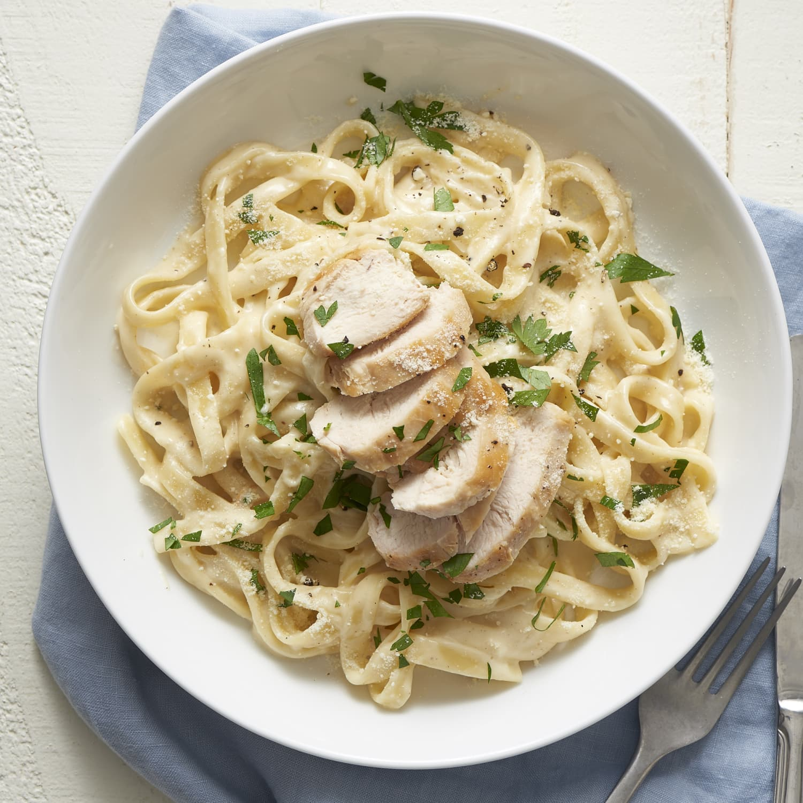

Chimken alfredo
It's alfredo, with chimken

This is approximately what alfredo should look like, yeah?
So, on this page I'll be learning you how to cook some alfredo. The basic ingredients you'll need will be:
- Whole milk
- 8 oz of parmesan cheese
- Two sticks of butter (yes, really, fight me)
- 8 oz cream cheese
- salt & ground black pepper
- garlic powder
- cayenne & paprika
- fettuccine
- as much chicken breast as you want, boi
So, ideally you want to do these three things in parallel, but I'll break them all down individually just so you can see the steps. With that in mind, think about how you can time this out so that you're optimizing your use of time.
Making the sauce
- pre-work: grate yourself an entire 8 oz block of parmesan cheese.
- Heat a sauce pan over low-medium heat.
- Throw in that whole ass stick of butter and melt that bad boy.
- Next, get that entire pack of cream cheese in there. Stir that shit up until it's a nice consistent texture.
- Pour in two cups of milk a little at a time, stirring throughout to keep the consistency even.
- Grind some black pepper and garlic powder to taste; I like to make a solid coating of the top of the sauce.
- Add in that parmesan a smidge at a time. It needs some time to melt, so do this slowly and mix throughout
- Take a little fingertip taste - add more pepper or garlic powder to taste
- Donezo!
Cooking the pasta
I shouldn't even have to say this, but I just want you to bear in mind that your water should be saline when you cook pasta and, dear lord, do not put oil in it. It will just make it impossible for the sauce to stay on the noodles. Fettuccine is tricky so just watch it as it cooks, and remove it when it's just a smidge more al dente than your desired texture.
Cooking the chicken
- pre-work: pre-heat the oven to 450. Yes, 450, you will thank me later, you fool.
- Tenderize that chicken. We want that goodness nice and soft.
- Microwave about a half-stick of butter in a container out of which you can pour it.
- Place chicken in a deep baking dish, then pour that butter all over the chicken breasts, and make sure it coats them all - mmmm, weight gain.
- Season the chicken to taste with salt, pepper, garlic powder, cayenne, and paprika, the latter two are optional but I think it gives the dish a nice little kick.
- Cover the chicken and put it in the middle rack once the oven is pre-heated
- In about 16 minutes or so, cut into the thickest bit of the biggest breast - if it's all cooked, you want to take it out now. If not, give it a couple more minutes and repeat as necessary.
- Cut the chicken to your desired chunk size
- Donezo!
Once all this is done, you can basically just combine everything. I tend to put the chicken in the alfredo sauce, and then put the alfredo sauce with the chicken into a large pot with the strained pasta, and mix that all about.
At any rate, this concludes my alfredo lesson. Love u <3